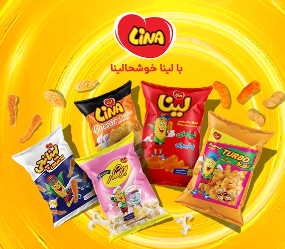
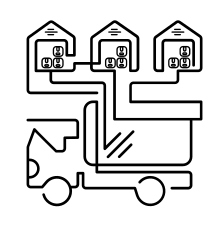

داستان لینا

از عمده فروشی توزیع تا تولید
بنیان گذار لینا از ابتدای کار خود در حوزه توزیع محصولات غذایی، همواره رویای تولید محصولات متفاوت را در سر می پروراند. تا اینکه در سال 1377 به همکاری شرکاء در کارخانه ای به مساحت 16000 متر مربع با تولید محصول با طعم و بسته بندی خاص به این مهم دست یافت.

اولین تجربه تولید
در سال 1379 با حذف مضرات رنگ مصنوعی، برای اولین بار از رنگ طبیعی در محصولات خود استفاده کرد(لینای لوبیایی)، اما به دلیل نارضایتی مشتری ناشی از کمرنگ بودن، تمامی محصولات خود را از بازار جمع آوری کرد.
هر اسنکی تولید نمی کنم
با هدف حذف مضرات رنگ مصنوعی نظیر آسم، بیش فعالی و اختلالات سیستم ایمنی، با تلاش فراوان توانست علاوه بر استفاده از رنگ طبیعی (فلفل قرمز شیرین پاپریکا)، رضایت مشتریان را نیز کسب نماید.

جهشی دیگر
علاوه بر استفاده از رنگ های طبیعی، در تمامی محصولات از طعم دهنده های طبیعی استفاده کرده است در همین راستا جهت تولید مواد اولیه با بهترین کیفیت، شرکت پارسا مهرآرین در سال 1386 را نصب و راه اندازی نمود. تا علاوه بر تامین مواد اولیه خود، نیاز شرکت های چون نستله ایران، آیدین، میهن و ... باشد.

صادرات، رشد و شکوفایی لینا
لینا با عبور از استانداردهای تعیین شده و به عنوان اولین تولید کننده اسنک با رنگ طبیعی توانست وارد بازار جهانی شود و صادرات به کشورهای همسایه، حوزه خلیج فارس و اروپا را از سال 1381 آغاز کرد. آلمان، هلند، دانمارک، نروژ، انگلستان، بلژیک، اتریش، فرانسه، امارات، بحرین، قطر و کویت از جمله کشور هایی هستند که محصولات لینا در آن ها عرضه می شود.

در نهایت
گروه صنعتی لینا هروز مصمم تر از قبل، دایره فعالیت خود را با هدف بهبود در کیفیت و تولید محصولات سالم و طبیعی، گسترش خواهد داد تا با تولید محصولاتی با کیفیت بالاتر از رقبای خارجس و قابل رقابت در بازار جهانی، برندی ایرانی در کلاسی جهانی را به دنیا معرفی نماید که لایق نام ایران موجب افتخار هر ایرانی باشد.درحال حاضر حدود 1200 نفردر بخش هایی نظیر تولید و فروش، بازاریابی و صادرات، در گروه صنعتی لینا مشغول به فعالیت هستند.